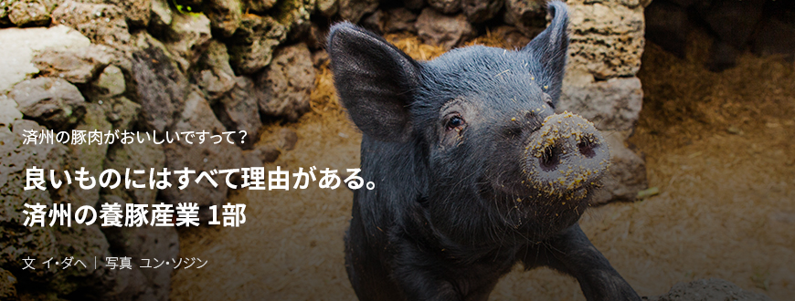
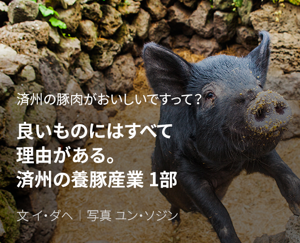
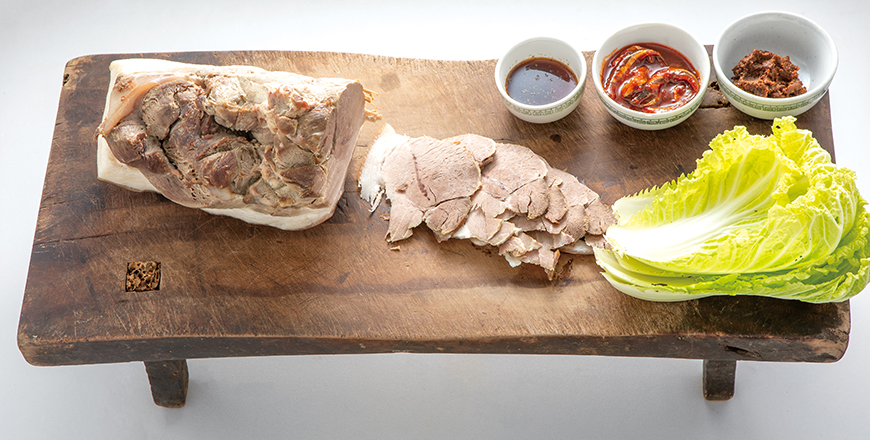
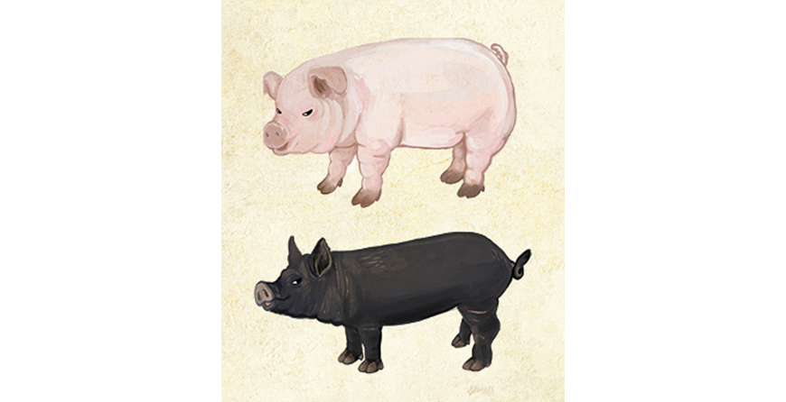
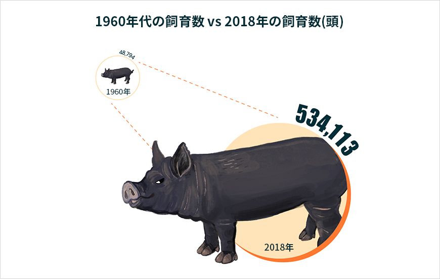
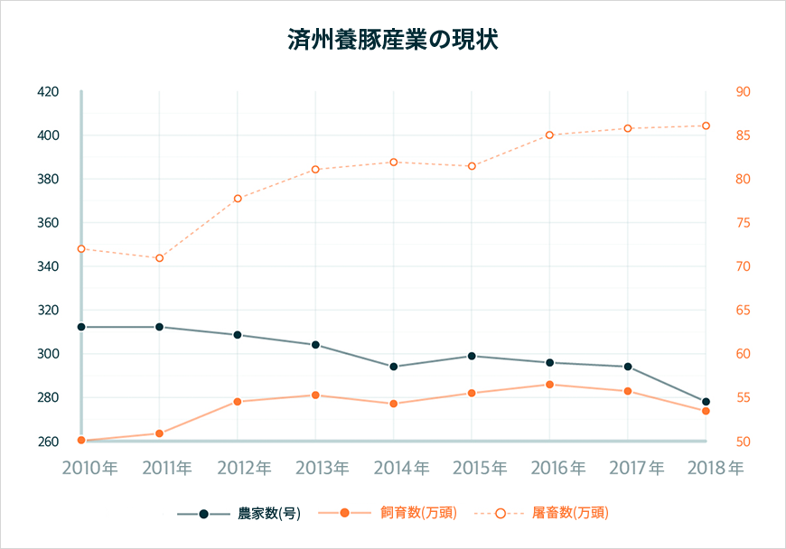
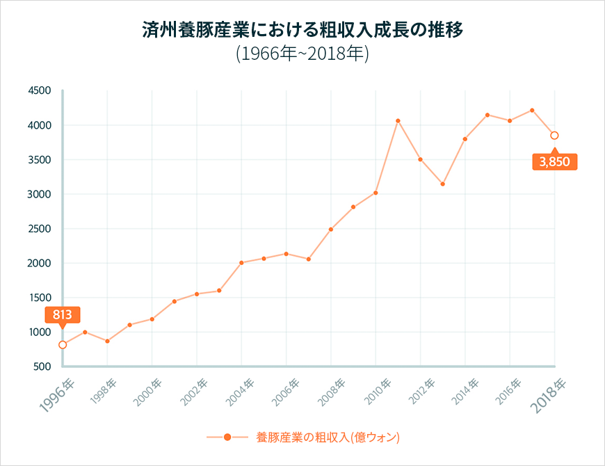
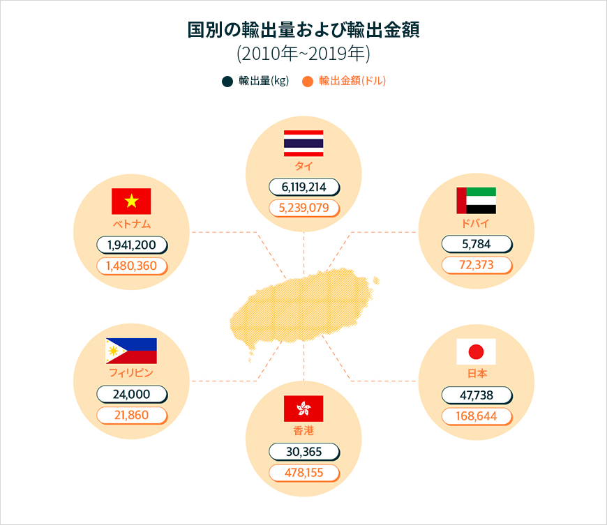

기획취재콘텐츠
- Home
- 제주라이프
- 기획취재콘텐츠
良いものにはすべて理由がある。済州の養豚産業 1部새로운 글


つややかな濃い黒色で、耳が小さく上に突き出た可愛い外貌、頑丈な体に短く弾力のある足は、よく思い浮かぶ豚の姿とはずいぶん違う。 濃厚で鮮かな肉の食感がよく、香ばしい味にたくさんの人が魅了される。 済州といえば思い浮かぶ代表的な食べ物、済州黒豚だ。
済州人にとって豚肉は食材料以上の意味をもつ。かつて済州には各家に黒豚を飼育する「トットンシ」があったのだが、ここで飼われた黒豚は人糞や生ごみの処理、堆肥の生産、蛇からの防御などの役割を果たしていた。かつてタンパク質がとりにくかった済州では、トットンシで飼っていた在来の黒豚が済州人にとっては素晴らしいタンパク質源だった。

- トンベゴギは、さっぱりとゆでた豚肉をトンベ(まな板)の上に食べやすく切って出す料理で、
済州でパーティがある際には欠かさず登場する伝統的な豚肉料理。 ⓒチェジュサンフェ -
済州でパーティがある際には欠かさず登場する伝統的な豚肉料理。 ⓒチェジュサンフェ -
現代になっても済州を代表する伝統料理には豚を材料にしたものが欠かせない。済州の黒豚は観光客が好む済州の伝統料理1位に選ばれるほど、済州グルメの代表メニューとして長い間親しまれている。済州産豚肉は韓国を代表するプレミアム食材料としてその地位を確固たるものとしている。
済州の豚、産業となる。
今の済州の養豚産業は、60年代以降から名実ともに済州経済の大きな柱を担う1次産業へ成長した。家と村単位の飼育と食文化として存在していた済州の豚はどのようにして済州の経済を支える産業へと成長できたのだろうか。
そのスタートに聖イシドル牧場がある。1954年に韓国へとやってきたアイランド出身のパトリック・ジェームズ・マグリンチィ神父は済州の恵まれた自然環境、豚肉を中心に発達した共同体と食文化から養豚産業の可能性を見出した。そうして1960年代初頭、子豚2千頭余りをソウルから済州へと運んでくることに至り、マグリンチィ神父はその後イシドル協会を設立し、養豚農家を開発する地域開発事業、良質の豚肉の種となる種豚分譲事業、良い種豚で良質の豚が飼育できる農民の育成と生産された済州の豚肉をしっかり流通させる協働組合の育成という多角的なアプローチから済州の養豚産業における足がかりを構築した。

- イラスト:イ·ソヒョン -
現在、済州では50万頭以上の豚を飼育している。そのうち黒豚は14万頭余りで全体飼育頭数の約25%を占める。済州で生産される白豚は産業化以降に導入された品種で、ほとんど粘りのある食感のランドレースと体格が大きく繁殖と哺乳能力に優れたヨークシャー、味の深いデュロックを交雑して作ったLYD(三元豚)だ。
済州在来の黒豚は2015年に天然記念物として指定され、済州特別自治道の畜産振興院で飼育・保存している。市販される黒豚は、在来の黒豚を農家で改良種と交配して生産性を改善した商業化したもの。済州の農家ではおいしくて良質な在来の黒豚と体格が大きく優れたハンプシャー、肉質がやわらかいバークシャー、デュロックなどと交雑した合成種豚を開発して飼育している。
済州畜産振興院では1997年に9千坪規模の種豚場を新設し、優秀種豚を改良するために毎年高品質の原種豚を輸入して農家に普及、優れた品質の豚肉の生産を奨励している。






※ 資料提供 : 済州特別自治道庁農畜産食品局畜産課
このようにしっかりとした養豚産業の育成と種豚開発に基づき、済州の養豚産業は産業化から約50年ぶりにみかん産業、観光産業と共に済州経済を支える3本柱の１つになる産業へと成長した。
2018年基準で済州道内における豚飼育数は534,113頭で、初めて養豚産業がスタートした1960年代の48,794頭に比べると12倍以上に飼育規模が拡大した。2010年以降、済州で屠畜する豚は1年平均80万頭。養豚産業の粗収入は1996年の813億ウォンから2010年以降は約4千億ウォン規模に成長した。これは全体畜産粗収入平均である9千億ウォンの45%に達する。
済州で屠畜される豚肉の30%は道内で消費し70%は道外へと流通されるのだが、最近は国内だけでなく海外にも流通先を拡大している。

国別の輸出量および輸出金額(2010年～2019年)
| 国別 | 輸出量(kg) | 輸出金額(ドル) |
|---|---|---|
| タイ | 6,119,214 | 5,239,079 |
| ドバイ | 5,784 | 72,373 |
| 日本 | 47,738 | 168,644 |
| 香港 | 30,365 | 478,155 |
| フィリピン | 24,000 | 21,860 |
| ベトナム | 1,941,200 | 1,480,360 |

※ 資料提供 : 済州特別自治道庁農畜産食品局畜産課
輸出の主な品目は豚肉副産物と干し肉、ハム、トンカツなど豚肉加工品だ。 主な輸出国はタイ、ベトナム、香港、日本などで、2010年から2019年まで約8千トンの豚肉副産物と加工品が輸出された。 10年間、養豚関連の輸出実績は746万ドルに上る。 2017年からは副産物はもちろん豚肉も輸出されている。 特に、18年は初めて中東市場のドバイに済州豚肉を輸出した。 現地の内需市場で豚肉の消費がほとんどないという点を考慮すれば、目を見張る成果だ。
養豚産業が成長して済州経済に与える直接・間接の波及効果もかなり大きい。良質な豚肉が受給できる環境は、済州における豚肉関係の外食産業の発展にも貢献した。
이전글
다음글